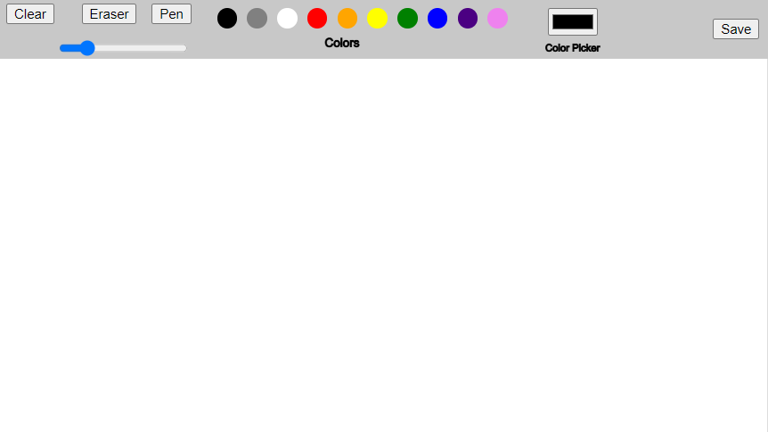
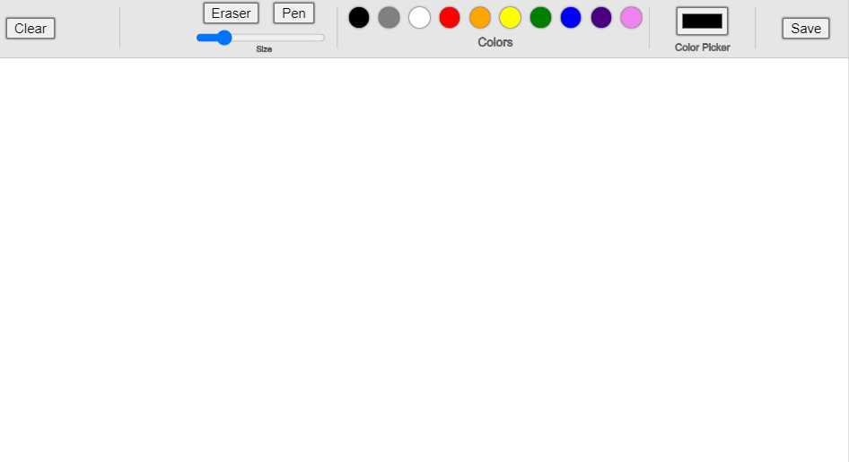
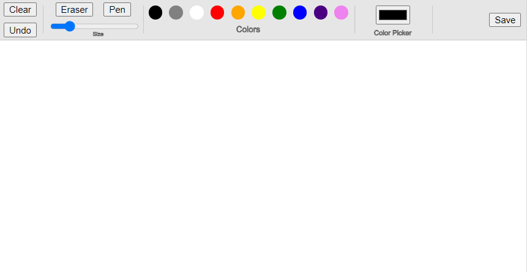

Overview and Usage
For my final project, I decided to create a sketch app using
P5.js that allows the user to draw a picture and save it as a file to
their computer. The features I decided to implement include drawing
with the pen tool, erasing, adjusting the size of pen or eraser using
a slider, picking the color of pen they would like to use through the
color panel or color picker, clearing the whole drawing, undo-ing the
last mark drawn (this works with both the "undo" button and using
ctrl+z), and saving the drawing to their computer as a .png file.
In order to use my drawing app, you can simply open the
Paint app
from the link and paint from there directly. Alternatively, you could
download the code from my
GitHub Respository
and run it from your local server.
Development Process
I broke this project up into several steps to complete it:
- I first started with my
paint prototype
that was already working, but had limited functionality and a super simple UI.

- I updated the UI so that the menu bar looked a little nicer, first by making it
a ligher shade of gray and then adding lines between each section of buttons. I
also added shadows to the buttons through CSS. I added some labels to certain parts
of the menu bar, such as "size" on the slider, "colors" under the color palette, and
"color picker" under the color picker. I also made the text and outlines dark gray
instead of black so they aren't as harsh.

- Then I added an "undo" button that allows the user to undo the last stroke they made.
I also added a ctrl+z functionality that works the same as the "undo" button so the
user can decide which they would like to use.

- Lastly, I went back and updated some bugs that were present in my code. For example,
the "save" function kept saving the entire canvas including the menu bar, instead of
only the part of the canvas that the user draws on. Another bug was that the "clear"
function kept clearing the whole screen, including the menu, rather than only clearing
the drawing area. Lastly, the way I implemented the "undo" button is that it takes a
screenshot of the canvas after every mark, so when the user "undo"s it brings back the
most recent screenshot. However, there was a bug where it was screenshotting the menu
as well and then putting the old screenshot directly over the new screenshot, which
started making the menu extremely blurry after undoing several times. So the last step
was to fix these bugs so that these functions worked as intended.
Issue Deep-Dive
An issue I ran into was that after I implemented my color picker, it started overriding
the color palette. What I mean by this is that even if I selected a color from the color
palette, it wouldn't change the color from what was selected in the color picker.
To fix this, I had to implement several additional pieces of code. First, I added this
line to my colorPicker:
colorPicker.input(handleColorInput);
Then I added these functions:
function colorButtonClicked(buttonColor) {
c = buttonColor;
stroke(buttonColor);
}
function handleColorInput() {
eraserMode = false;
c = this.value();
}
Lastly, I added this to the loop that creates the color panel:
colorButton.mousePressed(function() {
eraserMode = false;
colorButtonClicked(colors[i]);
});
This way, both the color buttons and the color picker both update
the color as they should.
Ideas and Future
Here are some ideas and features I might like to add to my project in the
future for the final version:
- Adding a "Shapes" option that allows the user to select a shape to draw. For example,
if they click on a circle icon, it will allow them to draw a perfect circle.
- This was one of my stretch goals, but adding a "fill" button that allows the user to
fill a certain area with a certain color. For example, if they drew a circle and would
like to color the circle red, they can use the "fill" option to easily do that.
- Allowing some sort of "copy" and "paste" function where they can select one part of
their sketch to copy and paste onto another area of the canvas. However, I feel like this
part would be pretty difficult to implement (similar to number 2) because this would
likely require keeping track of all the marks the user has drawn in a data structure
like an array or something.
Kudos
Here are some resources I found useful while working on this project:
- This
P5 code I found that provides an example for the "undo" function.
- Lots of P5 references, such as this createButton()
that explains how to create a button, this saveCanvas()
that was helpful in creating my "save" button, and this text()
function that was helpful in writing text to my menu bar.
- Lastly, some people in class helped me along the way as well. Hannah helped me fix the bug in my code
where the color picker was overriding the color panel, and in creating my buttons and putting shadows
on the buttons, and Christian helped me to create the color picker on my menu bar.